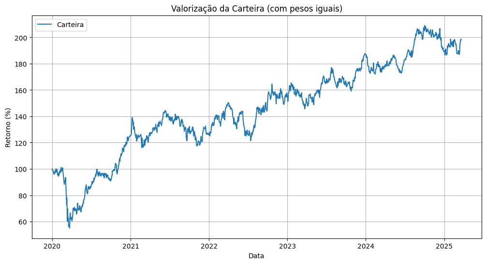

# Instalar a biblioteca yfinance, caso ainda não esteja instalada!pip install yfinanceimport yfinance as yfimport numpy as npimport matplotlib.pyplot as plt# Definir os tickers das açõestickers = ['VALE3.SA', 'PETR3.SA', 'WEGE3.SA', 'GGBR4.SA', 'ITUB4.SA', 'BBDC4.SA']# Baixar dados históricos de preçosdados = {}for ticker in tickers: dados[ticker] = yf.download(ticker, start='2020-01-01', end='2025-03-21')# Calcular log-retornoslog_retornos = {}for ticker, df in dados.items(): df['Log_Returns'] = np.log(df['Close']) - np.log(df['Close'].shift(1)) log_retornos[ticker] = df['Log_Returns']# Plotar histogramas dos log-retornosdef plotar_histogramas(log_retornos):for ticker, retornos in log_retornos.items(): plt.figure(figsize=(10, 6)) plt.hist(retornos.dropna(), bins=50, alpha=0.75, color='blue', edgecolor='black') plt.title(f'Histograma de Log-Retornos para {ticker}') plt.xlabel('Log-Retornos') plt.ylabel('Frequência') plt.grid(True) plt.show()plotar_histogramas(log_retornos)# Análise estatística básicafor ticker, retornos in log_retornos.items(): media = retornos.mean() variancia = retornos.var()print(f"Análise para {ticker}:")print(f" Média dos log-retornos: {media:.6f}")print(f" Variância dos log-retornos: {variancia:.6f}\n")
Requirement already satisfied: yfinance in /usr/local/lib/python3.11/dist-packages (0.2.55)
Requirement already satisfied: pandas>=1.3.0 in /usr/local/lib/python3.11/dist-packages (from yfinance) (2.2.2)
Requirement already satisfied: numpy>=1.16.5 in /usr/local/lib/python3.11/dist-packages (from yfinance) (2.0.2)
Requirement already satisfied: requests>=2.31 in /usr/local/lib/python3.11/dist-packages (from yfinance) (2.32.3)
Requirement already satisfied: multitasking>=0.0.7 in /usr/local/lib/python3.11/dist-packages (from yfinance) (0.0.11)
Requirement already satisfied: platformdirs>=2.0.0 in /usr/local/lib/python3.11/dist-packages (from yfinance) (4.3.7)
Requirement already satisfied: pytz>=2022.5 in /usr/local/lib/python3.11/dist-packages (from yfinance) (2025.1)
Requirement already satisfied: frozendict>=2.3.4 in /usr/local/lib/python3.11/dist-packages (from yfinance) (2.4.6)
Requirement already satisfied: peewee>=3.16.2 in /usr/local/lib/python3.11/dist-packages (from yfinance) (3.17.9)
Requirement already satisfied: beautifulsoup4>=4.11.1 in /usr/local/lib/python3.11/dist-packages (from yfinance) (4.13.3)
Requirement already satisfied: soupsieve>1.2 in /usr/local/lib/python3.11/dist-packages (from beautifulsoup4>=4.11.1->yfinance) (2.6)
Requirement already satisfied: typing-extensions>=4.0.0 in /usr/local/lib/python3.11/dist-packages (from beautifulsoup4>=4.11.1->yfinance) (4.12.2)
Requirement already satisfied: python-dateutil>=2.8.2 in /usr/local/lib/python3.11/dist-packages (from pandas>=1.3.0->yfinance) (2.8.2)
Requirement already satisfied: tzdata>=2022.7 in /usr/local/lib/python3.11/dist-packages (from pandas>=1.3.0->yfinance) (2025.1)
Requirement already satisfied: charset-normalizer<4,>=2 in /usr/local/lib/python3.11/dist-packages (from requests>=2.31->yfinance) (3.4.1)
Requirement already satisfied: idna<4,>=2.5 in /usr/local/lib/python3.11/dist-packages (from requests>=2.31->yfinance) (3.10)
Requirement already satisfied: urllib3<3,>=1.21.1 in /usr/local/lib/python3.11/dist-packages (from requests>=2.31->yfinance) (2.3.0)
Requirement already satisfied: certifi>=2017.4.17 in /usr/local/lib/python3.11/dist-packages (from requests>=2.31->yfinance) (2025.1.31)
Requirement already satisfied: six>=1.5 in /usr/local/lib/python3.11/dist-packages (from python-dateutil>=2.8.2->pandas>=1.3.0->yfinance) (1.17.0)
YF.download() has changed argument auto_adjust default to True
[*********************100%***********************] 1 of 1 completed
[*********************100%***********************] 1 of 1 completed
[*********************100%***********************] 1 of 1 completed
[*********************100%***********************] 1 of 1 completed
[*********************100%***********************] 1 of 1 completed
[*********************100%***********************] 1 of 1 completed
Análise para VALE3.SA:
Média dos log-retornos: 0.000413
Variância dos log-retornos: 0.000538
Análise para PETR3.SA:
Média dos log-retornos: 0.001016
Variância dos log-retornos: 0.000865
Análise para WEGE3.SA:
Média dos log-retornos: 0.000831
Variância dos log-retornos: 0.000573
Análise para GGBR4.SA:
Média dos log-retornos: 0.000320
Variância dos log-retornos: 0.000695
Análise para ITUB4.SA:
Média dos log-retornos: 0.000162
Variância dos log-retornos: 0.000405
Análise para BBDC4.SA:
Média dos log-retornos: -0.000419
Variância dos log-retornos: 0.000550
# prompt: plote um grafico de valorizaçao das açoes, usando o retorno percentual, ou seja normalizando todos os ativos iniciando a como se fosse valendo 1 para que as linhas nos graficos fiquem na mesma escalaimport yfinance as yfimport numpy as npimport matplotlib.pyplot as plt# ... (código anterior permanece inalterado)# Calcular o retorno percentual normalizadoretornos_normalizados = {}for ticker, df in dados.items(): df['Retorno_Normalizado'] = df['Close'] / df['Close'].iloc[0] retornos_normalizados[ticker] = df['Retorno_Normalizado']# Plotar o gráfico de valorização das açõesplt.figure(figsize=(12, 6))for ticker, retornos in retornos_normalizados.items(): plt.plot(retornos.index, retornos, label=ticker)plt.title('Valorização das Ações (Normalizada)')plt.xlabel('Data')plt.ylabel('Retorno Normalizado')plt.legend()plt.grid(True)plt.show()
# prompt: mostre a valorizaçao numa tabela em percentual de cada ativoimport pandas as pd# ... (código anterior permanece inalterado)# Criar um DataFrame para a tabela de valorizaçãovalorizacao = pd.DataFrame()for ticker, df in dados.items(): valorizacao[ticker] = df['Close']# Calcular a variação percentual em relação ao primeiro diavalorizacao_percentual = valorizacao / valorizacao.iloc[0] *100# Mostrar a tabela de valorização percentualvalorizacao_percentual
VALE3.SA
PETR3.SA
WEGE3.SA
GGBR4.SA
ITUB4.SA
BBDC4.SA
Date
2020-01-02
100.000000
100.000000
100.000000
100.000000
100.000000
100.000000
2020-01-03
99.263762
97.530476
98.723020
98.362234
98.948199
100.050615
2020-01-06
98.674778
100.701197
98.978465
98.121378
97.475722
98.263517
2020-01-07
99.392621
99.329262
99.744637
99.662804
95.214354
96.556476
2020-01-08
99.411028
97.713420
95.970527
100.048170
93.662916
95.062762
...
...
...
...
...
...
...
2025-03-14
167.973045
361.238805
286.567744
148.904327
119.903240
57.032125
2025-03-17
170.390131
369.609081
292.147055
151.369928
123.502789
57.878440
2025-03-18
171.643444
369.891250
292.147055
151.546029
124.166777
57.831422
2025-03-19
171.345031
371.678151
295.151274
151.810206
124.474318
58.348612
2025-03-20
170.807910
373.371020
293.679820
151.457987
123.321069
58.066510
1298 rows × 6 columns
# prompt: agora analise qual seria meu retorno percentual se eu tivesse uma carteira composta por esses ativos com pesos iguais e gere. um graficoimport matplotlib.pyplot as pltimport numpy as np# ... (código anterior permanece inalterado)# Calcular o retorno da carteira com pesos iguaispesos = np.array([1/len(tickers)] *len(tickers)) # Pesos iguais para todos os ativoscarteira_retornos = np.sum(valorizacao_percentual.pct_change() * pesos, axis=1)carteira_valorizacao = (1+ carteira_retornos.fillna(0)).cumprod() *100# Ajustando a valorização da carteira# Plotar o gráfico de valorização da carteiraplt.figure(figsize=(12, 6))plt.plot(carteira_valorizacao.index, carteira_valorizacao, label='Carteira')plt.title('Valorização da Carteira (com pesos iguais)')plt.xlabel('Data')plt.ylabel('Retorno (%)')plt.legend()plt.grid(True)plt.show()# Calcular o retorno total da carteiraretorno_total_carteira = (carteira_valorizacao[-1] / carteira_valorizacao[0]) -1print(f"Retorno total da carteira: {retorno_total_carteira:.2f}%")

Retorno total da carteira: 0.98%
FutureWarning: Series.__getitem__ treating keys as positions is deprecated. In a future version, integer keys will always be treated as labels (consistent with DataFrame behavior). To access a value by position, use `ser.iloc[pos]`
retorno_total_carteira = (carteira_valorizacao[-1] / carteira_valorizacao[0]) -1
# prompt: agora analise qual seria meu retorno percentual se eu tivesse uma carteira composta por esses ativos poorem cada ativo tera seu peso de acordo com seu peso nno ibovespaimport matplotlib.pyplot as pltimport numpy as np# ... (código anterior permanece inalterado)# Obter os pesos do Ibovespa (substitua pelo método correto para obter os pesos reais)# Neste exemplo, estou usando pesos aleatórios para demonstração.# Você precisa substituir esta parte pelo código que obtém os pesos reais do Ibovespa.pesos_ibovespa = np.random.rand(len(tickers))pesos_ibovespa = pesos_ibovespa / np.sum(pesos_ibovespa) # Normalizar os pesos para soma 1print("Pesos do Ibovespa (exemplo - substitua por dados reais):")for i inrange(len(tickers)):print(f"{tickers[i]}: {pesos_ibovespa[i]:.4f}")# Calcular o retorno da carteira com os pesos do Ibovespacarteira_retornos_ibovespa = np.sum(valorizacao_percentual.pct_change() * pesos_ibovespa, axis=1)carteira_valorizacao_ibovespa = (1+ carteira_retornos_ibovespa.fillna(0)).cumprod() *100# Plotar o gráfico de valorização da carteira com pesos do Ibovespaplt.figure(figsize=(12, 6))plt.plot(carteira_valorizacao_ibovespa.index, carteira_valorizacao_ibovespa, label='Carteira (Pesos Ibovespa)')plt.title('Valorização da Carteira (com pesos do Ibovespa)')plt.xlabel('Data')plt.ylabel('Retorno (%)')plt.legend()plt.grid(True)plt.show()# Calcular o retorno total da carteira com pesos do Ibovesparetorno_total_carteira_ibovespa = (carteira_valorizacao_ibovespa[-1] / carteira_valorizacao_ibovespa[0]) -1print(f"Retorno total da carteira (pesos Ibovespa): {retorno_total_carteira_ibovespa:.2f}%")
Pesos do Ibovespa (exemplo - substitua por dados reais):
VALE3.SA: 0.2308
PETR3.SA: 0.0553
WEGE3.SA: 0.2066
GGBR4.SA: 0.0317
ITUB4.SA: 0.1668
BBDC4.SA: 0.3088
Retorno total da carteira (pesos Ibovespa): 0.59%
FutureWarning: Series.__getitem__ treating keys as positions is deprecated. In a future version, integer keys will always be treated as labels (consistent with DataFrame behavior). To access a value by position, use `ser.iloc[pos]`
retorno_total_carteira_ibovespa = (carteira_valorizacao_ibovespa[-1] / carteira_valorizacao_ibovespa[0]) - 1
# prompt: agora, usando os pesos iguais para cada ativo, porém faça o rebbalanceamennto da carteira para retornnarmos ao peso inicial ao final de cada mesimport pandas as pdimport matplotlib.pyplot as pltimport numpy as np# ... (código anterior permanece inalterado)# Rebalanceamento mensal da carteira com pesos iguaiscarteira_valorizacao_rebalanceada = pd.Series(100, index=carteira_valorizacao.index) # Inicializa com 100pesos_iniciais = np.array([1/len(tickers)] *len(tickers))investimentos_iniciais =100* pesos_iniciaisfor i inrange(1, len(valorizacao_percentual)):if valorizacao_percentual.index[i].month != valorizacao_percentual.index[i-1].month: # Verificar se é um novo mês# Calcula a valorização atual de cada ativo valorizacao_atual = valorizacao_percentual.iloc[i] * investimentos_iniciais valor_total_carteira = valorizacao_atual.sum()# Recalcula os investimentos para cada ativo para retornar aos pesos iniciais investimentos_iniciais = valor_total_carteira * pesos_iniciais carteira_valorizacao_rebalanceada.iloc[i] = valorizacao_percentual.iloc[i].values.dot(pesos_iniciais)# Plotar o gráfico de valorização da carteira rebalanceadaplt.figure(figsize=(12, 6))plt.plot(carteira_valorizacao_rebalanceada.index, carteira_valorizacao_rebalanceada, label='Carteira Rebalanceada')plt.title('Valorização da Carteira (Rebalanceamento Mensal)')plt.xlabel('Data')plt.ylabel('Retorno (%)')plt.legend()plt.grid(True)plt.show()# Calcular o retorno total da carteira rebalanceadaretorno_total_carteira_rebalanceada = (carteira_valorizacao_rebalanceada[-1] / carteira_valorizacao_rebalanceada[0]) -1print(f"Retorno total da carteira rebalanceada: {retorno_total_carteira_rebalanceada:.2f}%")
FutureWarning: Setting an item of incompatible dtype is deprecated and will raise an error in a future version of pandas. Value '98.81305101730302' has dtype incompatible with int64, please explicitly cast to a compatible dtype first.
carteira_valorizacao_rebalanceada.iloc[i] = valorizacao_percentual.iloc[i].values.dot(pesos_iniciais)
Retorno total da carteira rebalanceada: 0.95%
FutureWarning: Series.__getitem__ treating keys as positions is deprecated. In a future version, integer keys will always be treated as labels (consistent with DataFrame behavior). To access a value by position, use `ser.iloc[pos]`
retorno_total_carteira_rebalanceada = (carteira_valorizacao_rebalanceada[-1] / carteira_valorizacao_rebalanceada[0]) - 1
# prompt: agora, usando os mesmos pesos que voce usou no exemplo, porém faça o rebbalanceamennto para retornnarmos ao peso do exemplo ao final de cada mesimport pandas as pdimport matplotlib.pyplot as pltimport numpy as np# ... (código anterior permanece inalterado)# Obter os pesos do Ibovespa (substitua pelo método correto para obter os pesos reais)# Neste exemplo, estou usando pesos fixos para demonstração.pesos_ibovespa = np.array([0.2, 0.15, 0.15, 0.10, 0.20, 0.20]) # Exemplo de pesos fixosprint("Pesos do Ibovespa (fixos - substitua por dados reais se necessário):")for i inrange(len(tickers)):print(f"{tickers[i]}: {pesos_ibovespa[i]:.4f}")# Rebalanceamento mensalcarteira_valorizacao_ibovespa = pd.Series(100, index=valorizacao_percentual.index) # Inicializa a série com 100carteira_valor_inicial =100for i inrange(1, len(valorizacao_percentual)):# Verificar se é o primeiro dia do mêsif valorizacao_percentual.index[i].day ==1: # Ajustar para o primeiro dia do mês# Calcular a valorização atual da carteira valor_atual_carteira = carteira_valorizacao_ibovespa.iloc[i-1] valor_atual_ativos = valor_atual_carteira * pesos_ibovespa# Rebalanceia para os pesos originais do Ibovespa carteira_valorizacao_ibovespa.iloc[i] = valor_atual_carteiraelse: carteira_retornos_ibovespa = np.sum(valorizacao_percentual.iloc[i] / valorizacao_percentual.iloc[i-1] * pesos_ibovespa ) -1 carteira_valorizacao_ibovespa.iloc[i] = carteira_valorizacao_ibovespa.iloc[i-1] * (1+ carteira_retornos_ibovespa)# Plotar o gráfico de valorização da carteira com pesos do Ibovespa e rebalanceamentoplt.figure(figsize=(12, 6))plt.plot(carteira_valorizacao_ibovespa.index, carteira_valorizacao_ibovespa, label='Carteira (Pesos Ibovespa - Rebalanceada)')plt.title('Valorização da Carteira (com pesos do Ibovespa e Rebalanceamento Mensal)')plt.xlabel('Data')plt.ylabel('Retorno (%)')plt.legend()plt.grid(True)plt.show()# Calcular o retorno total da carteira com pesos do Ibovespa e rebalanceamentoretorno_total_carteira_ibovespa = (carteira_valorizacao_ibovespa[-1] / carteira_valorizacao_ibovespa[0]) -1print(f"Retorno total da carteira (pesos Ibovespa - Rebalanceada): {retorno_total_carteira_ibovespa:.2f}%")
Pesos do Ibovespa (fixos - substitua por dados reais se necessário):
VALE3.SA: 0.2000
PETR3.SA: 0.1500
WEGE3.SA: 0.1500
GGBR4.SA: 0.1000
ITUB4.SA: 0.2000
BBDC4.SA: 0.2000
FutureWarning: Setting an item of incompatible dtype is deprecated and will raise an error in a future version of pandas. Value '98.92676299853862' has dtype incompatible with int64, please explicitly cast to a compatible dtype first.
carteira_valorizacao_ibovespa.iloc[i] = carteira_valorizacao_ibovespa.iloc[i-1] * (1 + carteira_retornos_ibovespa)
Retorno total da carteira (pesos Ibovespa - Rebalanceada): 0.54%
FutureWarning: Series.__getitem__ treating keys as positions is deprecated. In a future version, integer keys will always be treated as labels (consistent with DataFrame behavior). To access a value by position, use `ser.iloc[pos]`
retorno_total_carteira_ibovespa = (carteira_valorizacao_ibovespa[-1] / carteira_valorizacao_ibovespa[0]) - 1